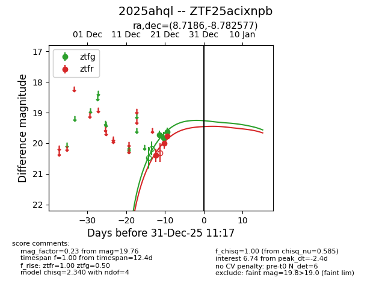
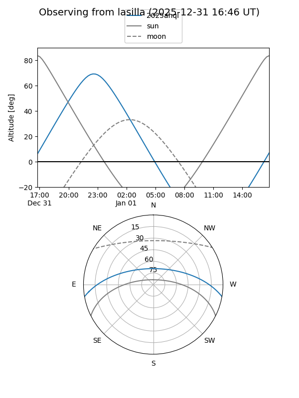
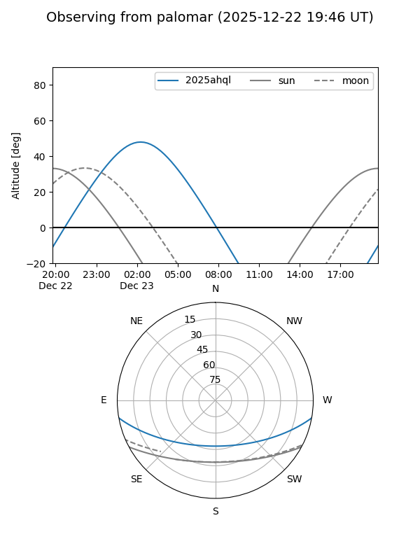
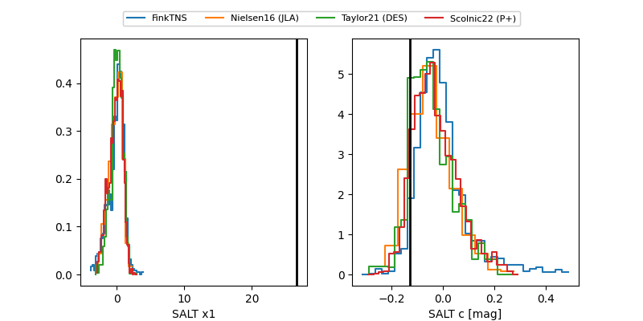

2025ahql
Target 2025ahql at 2025-12-20 06:04
Aliases and brokers:
FINK: fink-portal.org/ZTF25acixnpb
Lasair: lasair-ztf.lsst.ac.uk/objects/ZTF25acixnpb
ALeRCE: alerce.online/object/ZTF25acixnpb
TNS: wis-tns.org/object/2025ahql
YSE: ziggy.ucolick.org/yse/transient_detail/2025ahql
alt names
ZTF25acixnpb (ztf,fink_ztf)
2025ahql (tns,yse)
Coordinates:
equatorial (ra, dec) = 8.7186,-8.78258
equatorial (HMS+DMS) = 00:34:52.47,-08:46:57.28
galactic (l, b) = (110.1111,-71.24086)
Flags:
Photometry:
last ztfg=19.72, ztfr=20.40
1 ztfg, 1 ztfr detections
Lightcurve

Visibility


Additional plots
